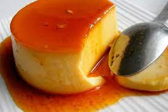

Receita de Pudin
O pudin caseiro é por excelência; Tem de tudo: é fácil de preparar, requer poucos ingredientes, é cremoso, fresco ...; É o toque final perfeito para a refeição familiar de domingo, que todos adoram.
Ingredientes
- 5 ovos, em temperatura ambiente
- 1 lata (390 gramas) de leite condensado
- Leite líquido ou água
- 1 colher de chá de baunilha
Para o caramelo
- 1/2 xícara de açúcar branco
- 1/4 xícara de água
Preparação
- Aqueça o forno a 350 ° F / 180 ° C.
- Para fazer o caramelo:em uma panela em fogo médio, coloque o açúcar e a água para fazer uma calda até ficar com uma cor âmbar clara; quando começa a ficar corado, é fácil de queimar, então fique de olho e tire do fogo antes que fique muito escuro, senão vai ficar com um gosto amargo. Despeje o caramelo sobre a forma onde vai fazer o queijo e deixe esfriar.
- No liquidificador, coloque todos os ingredientes do queijo: ovos, leite condensado e a mesma medida da lata de leite líquido ou água, baunilha e cachaça se for usar, processe tudo rápido.
- Despeje a mistura na forma com o caramelo, coloque uma tampa ou papel alumínio. Coloque o queijo em um recipiente maior, em banho-maria, no forno e leve ao forno por 50 minutos a 1 hora, até que um palito inserido saia limpo (o centro do queijo pode mover-se um pouco, que vai se acomodar ao esfriar.
- Retire do forno e deixe esfriar completamente até a temperatura ambiente, depois leve à geladeira durante a noite (assim fica mais gostoso).
- Para desenformar, passe uma faca fina em volta do queijo, vire em um prato largo e raso para que o caramelo caia. Sirva, aproveite e seja feliz com cada mordida gloriosa.